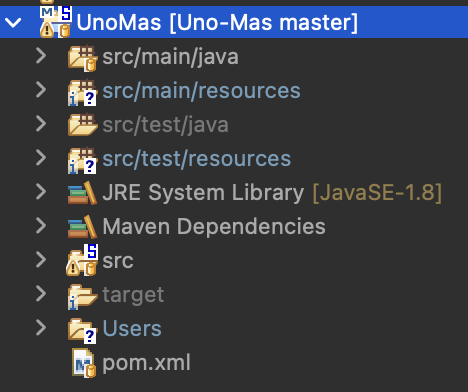
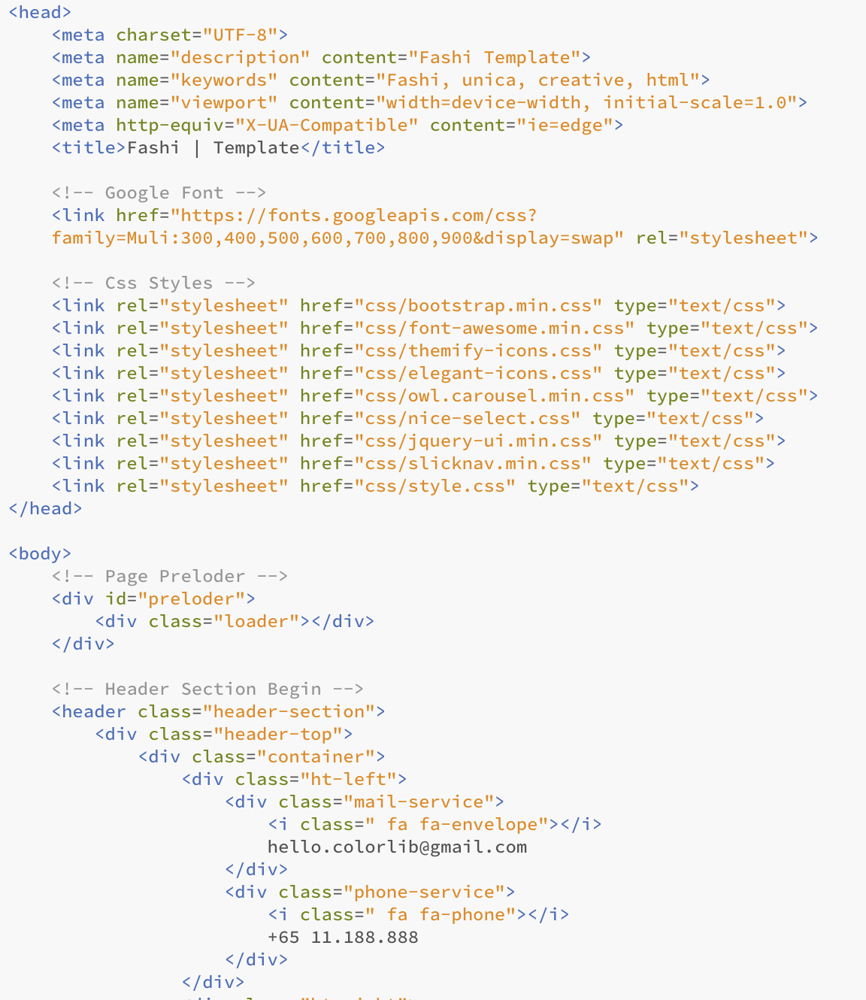

JAVA Spring) 1인가구를 위한 쇼핑몰 Uno más 개발일지 3 - Spring Legacy 프로젝트와 GitHub 원격저장소 연결하고 사이트 템플릿 초기설정
- 작성일 : 2022.04.21
- 작성자 : 황유진
- 팀원 : 김진영, 박승지, 반현빈, 오성은, 오은현, 윤정환, 황유진
- GitHub Repository : https://github.com/miro7923/Uno-Mas
개발환경
- MacBook Air (M1, 2020)
- OpenJDK 8
- Spring Tool Suite 4.14.0
- Spring framework 4.3.1.RELEASE
- Tomcat 8.5
- MySQL Workbench 8.0.19
기간
- 2022.4.13 ~ 2022.5.20
주제
- 웹 백엔드 수업 중 마지막 과제로 팀 프로젝트를 진행하게 되었다.
- 조건은
Spring기반으로 웹 사이트를 제작하는 것이다. - 총 팀원은 7명이며, 우리 팀은
1인 가구를 위한 쇼핑몰을 주제로 정했다. - 팀 이름으로 정해진
Uno más는 스페인어로하나 더라는 뜻이다.
진행상황 1
.gitignore때문에 제법 많은 시간을 쓴 프로젝트와 GitHub 원격저장소 연결… 다음에 또 같은 상황을 맞이하게 되었을 때 참고하기 위해서 글을 작성했다.
GitHub 원격저장소 초기화(생성)
- 아직 팀 프로젝트를 위한 원격저장소가 없다면 새로 생성하면 되는데 우리 팀 같은 경우에는 기존에 테스트용으로 만들었던 원격저장소가 있었는데 기존에 쓸모 없이 업로드 되어 있던 파일들이 좀 있었던 터라 그대로 쓰기에는 적절하지 않았다. 그래서 초기화 후 다시 진행하기로 했다.
- 초기화 하는 방법에는 git으로 github repository 초기화 하기 이 글처럼 로컬 저장소에 숨김처리 되어 있는
.git폴더를 삭제한 후 강제 리모트해서 푸시 하는 방법이 있는데 해 보니까merge내역이 엉켜서 그런 것인지 되지 않아서 그냥 로컬저장소에 추가 되었던 내용물을 삭제한 후 빈 폴더를origin으로push해서 원격저장소를 초기화 했다. 그리고 로컬저장소를 삭제한 다음 원격저장소에서 다시 클론했다.
.gitignore 작성
- 그간은 혼자 GitHub 원격저장소를 사용했기 때문에 시스템 환경설정 버튼이 함께 업로드 되는 것을 신경쓰지 않고 살았는데 팀 프로젝트를 하면서 공유하게 되니까 저것들이 신경쓰였다. 그래서 업로드에 앞서
.gitignore설정을 가장 먼저 했다. - JAVA Spring) 1인가구를 위한 쇼핑몰 Uno más 개발일지 2 - Spring Legacy 프로젝트를 위한 .gitignore 설정
- 클릭하면
.gitignore작성문을 참고할 수 있다.
Spring Legacy Project와 GitHub 원격저장소 연결
- [Git] 이클립스(STS)에서 깃허브 연동 방법 정리
- 전체적인 진행은 위 글을 참고했다.
- 로컬저장소는 새로 생성하지 않고 아까 클론했던 폴더를 사용했다. 여기까지는 순조로웠다.
- 그런데 커밋을 하려 하니까
Unstating목록에서Staging목록으로 파일들이 옮겨지지 않았다. 무슨 일… 그래서 클론했던 로컬저장소 폴더를 삭제하고 다른 경로로 클론한 뒤 프로젝트의 로컬저장소 경로도 거기로 설정해 주니까 첫 번째commit과push까지는 정상 작동하긴 했다.

- 그런데 원격저장소에 업로드가 잘 된 것을 확인했는데
STS상에서는 여전히commit할 파일이 한가득이라고 뜨는 것이었다… 당시 캡쳐본이 없어서 글로 대신하지만 아까전에commit했던 내역이Unstaged칸에 그대로 남아 있었다. - 그래서 한 번 더
commit & push를 시도했는데, 결과는 성공했는데 원격저장소의 프로젝트 파일이 모두 삭제된 것이었다. 환장….🥲 로컬STS상에서는 커밋할 것이 있다는 표시도 나오지 않았다. - 그래서 다시 한 번… 원격저장소의 클론부터 새 프로젝트 생성 및 원격저장소 연결까지 반복했다.

- 마지막 시도에서 드디어 커밋까지는 잘 되었는데
push하는 과정에서 충돌이 생긴다며reject되었다. - https://blog.naver.com/PostView.nhn?isHttpsRedirect=true&blogId=sim4858&logNo=220924984480
- 여기를 참고해서 해결할 수 있었다. 첫 번째 글을 작성했던 분이 마치 이 상황까지 예상한 듯이 게시글의 하단에 참고 링크를 올려 놓으셨다… 아마 레포지토리를 새로 생성한 직후가 아닌 기존에 사용하던 것을 재활용하다보니 병합 과정에서 충돌이 생긴 것 같았다.

-
그리고 드디어 최종 업로드에 성공했다.
- 이 과정을 겪으며 알게 된 것은
.gitignore를 사전에 잘 만들어두고 시작해야 한다는 것과gitignore가 꼭 원격저장소에push되어 있지 않고 로컬저장소에만 있어도 적용이 된다는 것이었다. - 왜냐면 처음엔
.gitignore가 원격저장소에push되어 있어야만 적용이 되는 줄 알고 프로젝트 파일을push하기 전에.gitignore만push하려다가 이상하게 꼬여서STS에서commit이 제대로 되지 않는 경우가 많이 생겨서 몇 번이나 처음부터 다시 시작해야 했기 때문이다… - 그래도 이제
GitHub으로 팀 프로젝트를 어떻게 시작해야 할 지 조금 알 것 같다.
진행상황 2
- 홈페이지 디자인으로는 무료 템플릿을 수정해서 사용하기로 했기 때문에 각
html파일의 소스코드를 수정할 필요가 있었다.

- 모든 헤더 부분이 이렇게 되어 있었기 때문에 헤더만 따로 파일을 만들어서 각
html페이지의 헤더 부분에include해 주어야 했다. 그렇게 하지 않으면 헤더에 변경사항 생기면 모든 페이지의 헤더 부분을 수정해줘야 하니까… 헤더 페이지 하나만 수정하면 다른 페이지에도 일괄 적용되게 하고 싶었다. - 그렇게 하기 위해서는
jsp 액션태그를 사용해야 해서 모든html페이지를jsp페이지로 바꿨다.
top.jsp
<%@ page language="java" contentType="text/html; charset=UTF-8"
pageEncoding="UTF-8"%>
<%@taglib prefix="c" uri="http://java.sun.com/jsp/jstl/core" %>
<c:set var="path" value="${pageContext.request.contextPath}"></c:set>
<head>
<meta charset="UTF-8">
<meta name="description" content="Fashi Template">
<meta name="keywords" content="Fashi, unica, creative, html">
<meta name="viewport" content="width=device-width, initial-scale=1.0">
<meta http-equiv="X-UA-Compatible" content="ie=edge">
<title>Uno más | Template</title>
<!-- Google Font -->
<link href="https://fonts.googleapis.com/css?family=Muli:300,400,500,600,700,800,900&display=swap" rel="stylesheet">
<!-- Css Styles -->
<link rel="stylesheet" href="${path}/resources/css/bootstrap.min.css" type="text/css">
<link rel="stylesheet" href="${path}/resources/css/font-awesome.min.css" type="text/css">
<link rel="stylesheet" href="${path}/resources/css/themify-icons.css" type="text/css">
<link rel="stylesheet" href="${path}/resources/css/elegant-icons.css" type="text/css">
<link rel="stylesheet" href="${path}/resources/css/owl.carousel.min.css" type="text/css">
<link rel="stylesheet" href="${path}/resources/css/nice-select.css" type="text/css">
<link rel="stylesheet" href="${path}/resources/css/jquery-ui.min.css" type="text/css">
<link rel="stylesheet" href="${path}/resources/css/slicknav.min.css" type="text/css">
<link rel="stylesheet" href="${path}/resources/css/style.css" type="text/css">
<link rel="stylesheet" href="${path}/resources/css/headerFooter.css" type="text/css">
</head>
- 이런 식으로
<head>태그에 들어갈 것만 따로 분리한jsp페이지를 만든 다음에
index.jsp
<%@ page language="java" contentType="text/html; charset=UTF-8"
pageEncoding="UTF-8"%>
<%@taglib prefix="c" uri="http://java.sun.com/jsp/jstl/core" %>
<c:set var="path" value="${pageContext.request.contextPath}"></c:set>
<!DOCTYPE html>
<html>
<!-- Start header -->
<jsp:include page="inc/top.jsp"></jsp:include>
<!-- Start header -->
<body>
<!-- Header Section Begin -->
<jsp:include page="inc/header.jsp"></jsp:include>
<!-- Header End -->
-
각 페이지의 상단에
<head>태그가 들어가는 부분에는top.jsp파일을include하고 헤더 부분에는header.jsp파일을include해 주었다. - 각 페이지 하단 부분
<!-- Footer Section Begin --> <jsp:include page="inc/bottom.jsp"></jsp:include> <!-- Footer Section End --> bottom.jsp파일을 만들어서 하단 부분에include해 주었다.- 이제 헤더와 푸터 부분에서 수정사항이 생기면
header.jsp와bottom.jsp파일만 수정하면 된다.
참고
- [Git] 이클립스(STS)에서 깃허브 연동 방법 정리
- https://blog.naver.com/PostView.nhn?isHttpsRedirect=true&blogId=sim4858&logNo=220924984480
마감까지
D-29